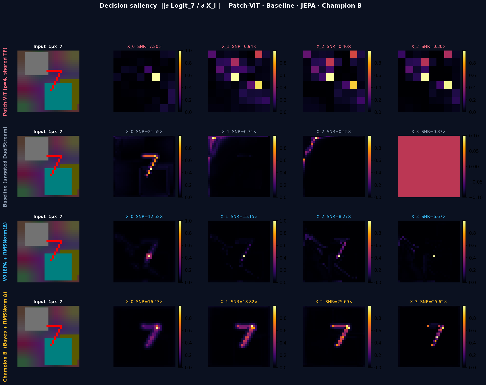
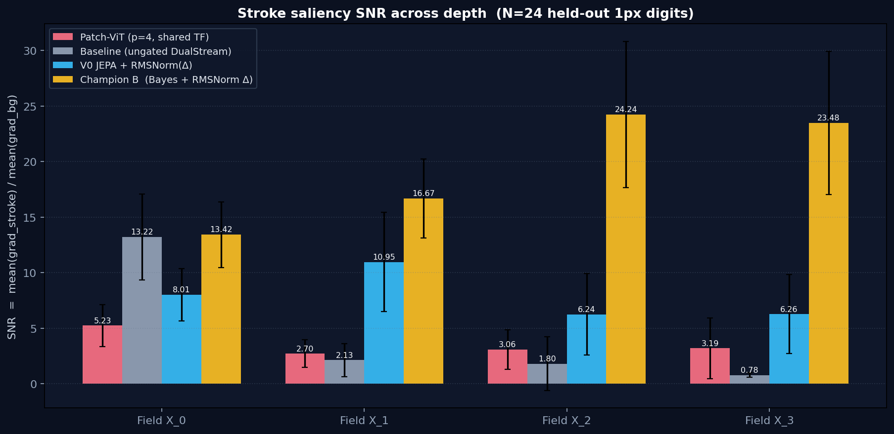
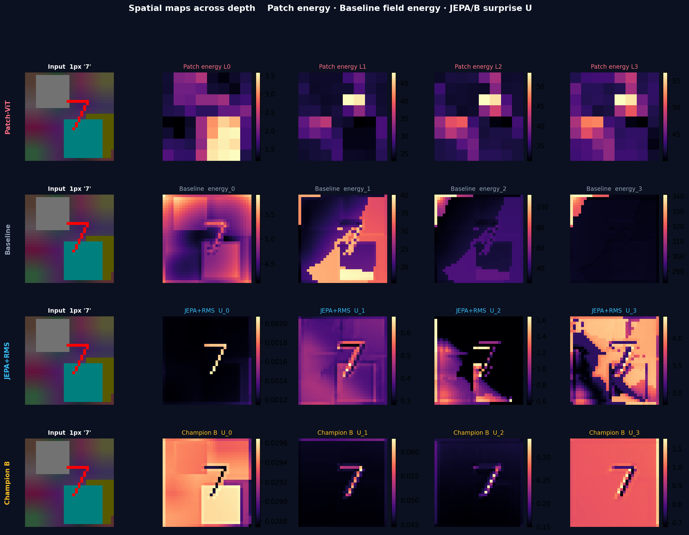
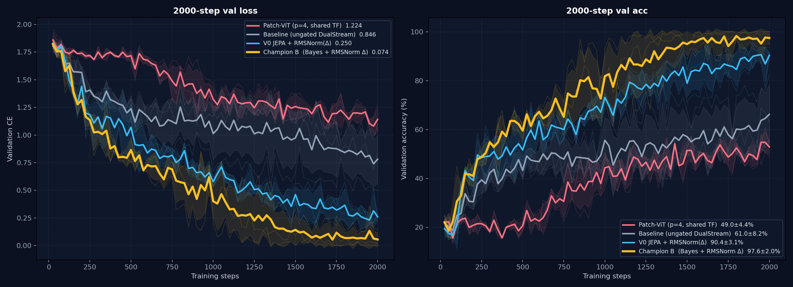
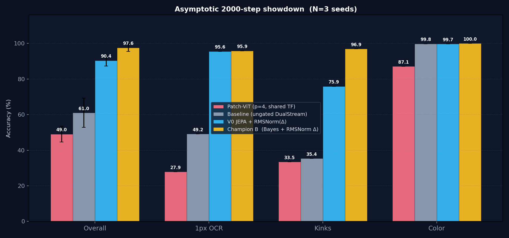
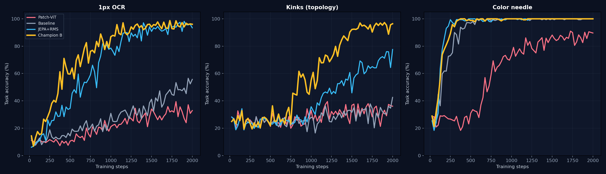

四路阶梯：Patch-ViT → Baseline → JEPA+RMS → Champion B
同一套合成 VQA（1px OCR / Kinks / Color）、2000 步、3 种子。 传统 patch 网格 $49.1\%$，无门控点场 $61.0\%$， JEPA + RMSNorm($\Delta$) $90.4\pm3.1\%$， Bayes + RMSNorm($\Delta$) $97.6\pm2.0\%$。 两家门控都带 RMS；分差几乎全在 Kinks（$75.9$ vs $96.9$）。
正确答案（数字 '7'）的 logit 对各层特征的偏导模长。 Patch-ViT 把 $4\times4$ 格子的 token 梯度铺回像素；其余三家是点场 $X_l$。 $$\text{Saliency}_l = \left\| \frac{\partial \text{Logit}_{7}}{\partial X_l} \right\|_2$$

1. Patch-ViT 从第一层就是 $4\times4$ 方块，永远画不出 1px 的 '7'。 这不是训不够，是归纳偏置：笔画被摊进 16 个像素的平均。
2. 无门控 DualStream $X_0$ 其实最尖（单图 $21.5\times$）——点场看得到细结构。 $X_1$ 起被未调制残差冲掉，到 $X_3$ 变成均匀红场。
3. JEPA + RMS 不再塌成红场：单图 $12.5\to15.2\to8.3\to6.7\times$，'7' 一直还在，只是比 B 淡、深一层开始散。
4. Champion B $16\to19\to26\to26\times$，越深越尖，背景全黑。
$\text{SNR} = \overline{\text{Grad}}_{\text{stroke}} / \overline{\text{Grad}}_{\text{bg}}$，N=40。

| $X_0$ | $X_1$ | $X_2$ | $X_3$ | |
|---|---|---|---|---|
| Patch-ViT | $5.23$ | $2.70$ | $3.06$ | $3.19$ |
| Baseline | $13.22$ | $2.13$ | $1.80$ | $0.78$ |
| JEPA+RMS | $8.01$ | $10.95$ | $6.24$ | $6.26$ |
| Champion B | $13.42$ | $16.67$ | $\mathbf{24.24}$ | $\mathbf{23.48}$ |
Patch 没有切片惊奇度，画的是 token 能量铺回像素；Baseline 无门控，$U\equiv 0$，画点场能量； JEPA+RMS / B 画 $U_l(x,y)$。色标各自归一，看结构不看绝对数。

全部：$d=128$，4 层，res $32$，AdamW $10^{-3}$，余弦退火，种子 $\{42,1001,7777\}$，终评 1120 样本。 Patch-ViT 是 $p=4$ 固定网格（64 token）与文本拼在一起做共享自注意力，无切片、无 deslice、无门控（$0.63$M 参数）。 后三家是 Dual-Stream 点场（$2.1$M）：Baseline $g=1$，JEPA 与 Champion B 都用 RMSNorm($\Delta$)，只是门控分别是 $L_2$ 与高斯 KL。
| 实验组 | 综合 Acc (%) | Val Loss | 1px OCR | Kinks | Color | 相对 Patch-ViT |
|---|---|---|---|---|---|---|
| Patch-ViT $p=4$，共享 Transformer |
$49.05 \pm 4.38$ | $1.224$ | $27.9\%$ | $33.5\%$ | $87.1\%$ | 传统 A 路。1px 进不了 $4\times4$ 格子 |
| Baseline DualStream，无门控 $g=1$ |
$61.01 \pm 8.21$ | $0.846$ | $49.2\%$ | $35.4\%$ | $99.8\%$ | 点场比 patch 多 $+12$ Acc；深层仍被残差冲掉 |
| JEPA + RMS $L_2$ 门控 + RMSNorm($\Delta$) |
$90.39 \pm 3.09$ | $0.250$ | $95.6\%$ | $75.9\%$ | $99.7\%$ | 与 B 同一套残差更新；OCR 已打平，Kinks 仍落后 |
| Champion B Bayes + RMSNorm($\Delta$) |
$\mathbf{97.59 \pm 2.01}$ | $\mathbf{0.074}$ | $\mathbf{95.9\%}$ | $\mathbf{96.9\%}$ | $\mathbf{100\%}$ | 相对 Patch：Acc $+48.5$，OCR $+68$，kinks $+63$ |



1. Color 几乎人人会做。Patch 87%、其余三家 100%——它测不到 1px 能力。
2. 点场本身就比 patch 强一档（$49\to61$），因为 $X$ 还在像素分辨率。没有门控，这个优势只活在 $X_0$。
3. JEPA+RMS 把 OCR 拉到 $95.6$，与 B 打平；Kinks $75.9$，还差一截。
4. B 的剩余红利几乎全在拓扑（Kinks $96.9$）。阶梯是分辨率 → 写回不被冲掉 → RMS 钉幅度 → KL 门控，不是换一个更大的 ViT。
两边都是 $\lambda=0.1$，Stiefel，topk2，RMSNorm($\Delta$)，2000×3。差别只剩门控是 $L_2$ 还是高斯 KL。
| Acc | OCR | Kinks | |
|---|---|---|---|
| JEPA + RMSNorm($\Delta$) | $90.4\pm3.1$ | $95.6$ | $75.9$ |
| Bayes + RMSNorm($\Delta$) | $\mathbf{97.6\pm2.0}$ | $95.9$ | $\mathbf{96.9}$ |

架构是 I/O 对称的。识别（图文生文）和重建已经测过；生成只是换初值： $X_0$ 换成噪声或残缺图，最后读 $X_L$ 而不是 $H_L$。
| 端口 | 公式 | 本仓库里的名字 |
|---|---|---|
| 文生文 | $H_0=\text{文本},\; X_0=\mathbf{0}\;\to\;$ 读 $H$ | T2T（语言） |
| 图文生文 | $X_0=\text{图},\; H_0=\text{问}\;\to\;$ 读 $H$ | IT2T / OCR / VQA |
| 重建 | $X_0=\text{图}\;\to\;$ 解码 $X$ | Recon |
| 文生图 | $X_0=\text{噪声},\; H_0=\text{描述}\;\to\;$ 解码 $X$ | T2I |
| 图生图 | $X_0=\text{图},\; H_0=\text{指令}\;\to\;$ 解码 $X$ | I2I（上色 / 去噪） |

行：图文生文 · 重建 · 文生图 · 图生图。列：输入场 · 目标 · 预测。
| 端口 | 探针结果 | 怎么读 |
|---|---|---|
| 文生文 T2T | 答案在问句里时 acc $100\%$ | $H$ 通路通。这是玩具抄写，不是语言能力 |
| 图文生文 IT2T | 混训 OCR $\sim 40\%$（专训 B 是 $96\%$） | 端口成立；和像素头抢容量 |
| 重建 Recon | PSNR $\sim 21$，笔画在 | 写回点场已经会（和 line-recon 一致） |
| 图生图 I2I | 去噪能找回 1px 字形，PSNR $\sim 13$ | $H$ 指令 + 残缺 $X_0$ 可以改场 |
| 文生图 T2I | 先学会颜色，字形还没长出来，PSNR $\sim 6$ | 语言先验单独写结构，这一头还没过 |
Write_visual 在有视觉证据时工作；
文生图失败说明「只靠 $H$ 从空场长出 1px 结构」还是缺的那一块，不是已经完成的故事。
权重一路都是 AdamW。消融的是前向对切片矩阵 $S\in\mathbb{R}^{32\times 128}$ 的 4 层残差： $S \leftarrow S + \eta\, g(U)\, O(\Delta)$，$\Delta = S_2 - S$。
| $O(\Delta)$ | 综合 Acc | Kinks | 7777 这颗炸种子 | 几何 |
|---|---|---|---|---|
| B · RMSNorm($\Delta$) | $\mathbf{97.59\pm 2.01}$ | $\mathbf{96.9}$ | $\mathbf{99.6}$（kinks $99.2$） | 整条 token 只改幅度，方向不动，无层状态 |
| Momentum | $97.02\pm 3.45$ | $97.2$ | $99.4$ | 跨层平滑，方向大致仍是 $\Delta$ |
| Muon $\mathrm{NS}(m)$ | $94.76\pm 3.74$ | $85.5$ | $89.9$（kinks $70.4$） | 保住列空间，但把 32 个奇异值强行铺平 |
| Adam $m/\sqrt{v}$ | $90.45\pm 5.19$ | $75.9$ | $83.1$（kinks $53.0$） | 4 步地平线 + $\beta_2=0.999$ ≈ 逐坐标符号，拆相对角度 |
方案 A：Stiefel 流形极分解硬投影 (Newton–Schulz)
作用位置：语言探针矩阵 $Q_{\text{slice}} \in \mathbb{R}^{M \times d}$
数学机制：在每次 forward 时，采用 Muon 五阶极分解将探针投影到 Stiefel 流形 $\mathrm{St}(M, d)$：
$$Q_{\text{ortho}} = \text{Newton-Schulz}(Q), \quad \text{满足 } Q_{\text{ortho}} Q_{\text{ortho}}^\top = I_M$$
核心优势：零超参数、无额外 Loss，几何硬约束将先验秩从 1.00 强制拉满至 32.00！
方案 B：LeJEPA SIGReg (Statistical Isotropic Gaussian Regularizer)
作用位置：先验/后验特征空间分布 $Z \in \mathbb{R}^{B \cdot M \times d}$
数学机制：强制切片特征分布在通道与切片维度服从各向同性高斯，惩罚协方差非对角能量：
$$\mathcal{L}_{\text{cov}} = \frac{1}{d} \sum_{i \neq j} [\Sigma_Z]_{ij}^2, \quad \mathcal{L}_{\text{slice}} = \frac{1}{M(M-1)} \sum_{m \neq k} [C_{\text{slice}}]_{mk}^2$$
实测：官方 Epps–Pulley 打在活 $S$ 上，流形是撑开了（L3 云从 2.3 到 73），
准确率却从 86 掉到 70；关掉 Stiefel 只留 SIGReg 更掉到 37.5。
深秩 2–4 在 84%+ 模型里是健康漏斗，不是病。
产品默认因此很短：Stiefel 开，SIGReg 关，前向更新用 B，权重继续 AdamW。